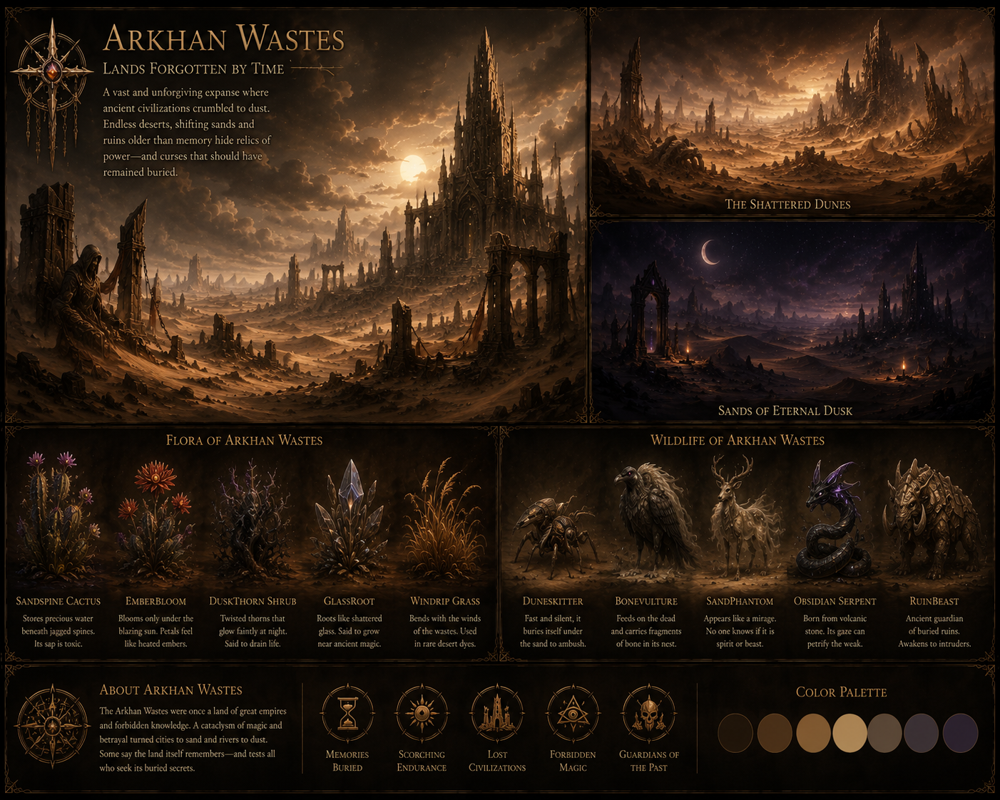
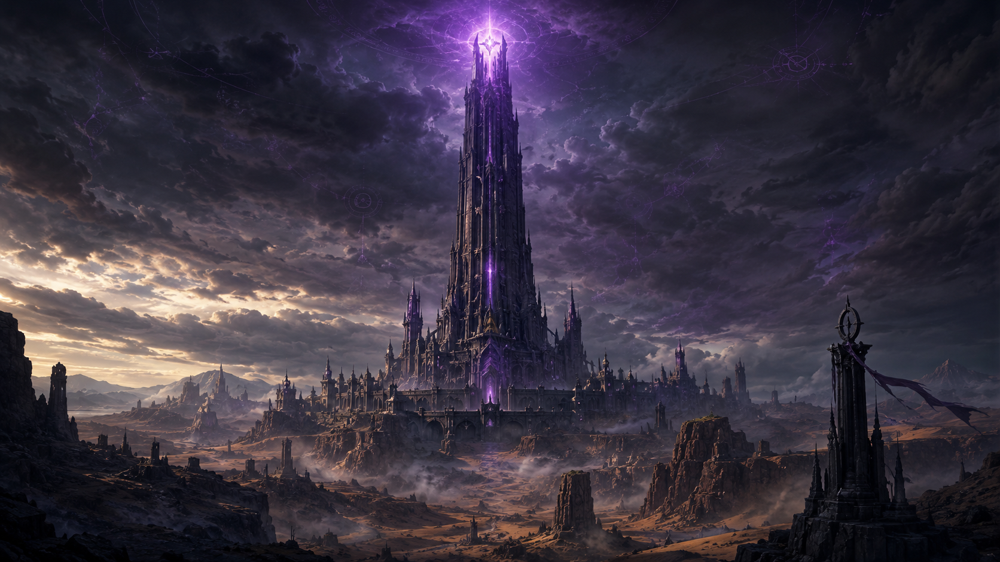
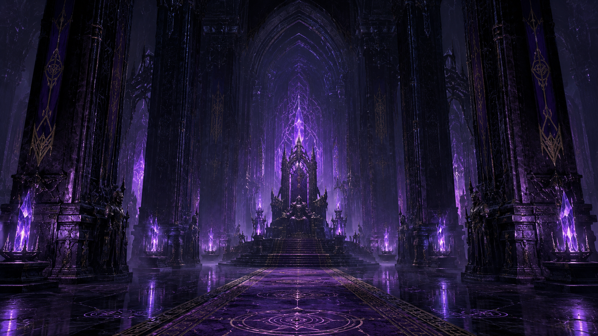
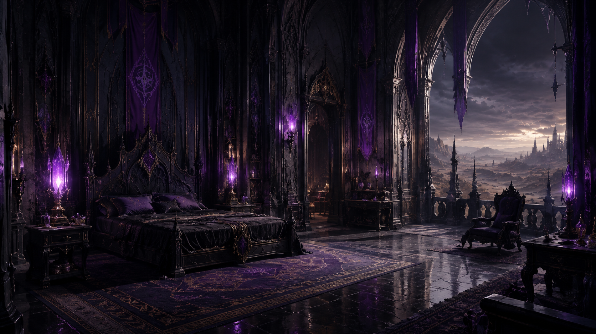
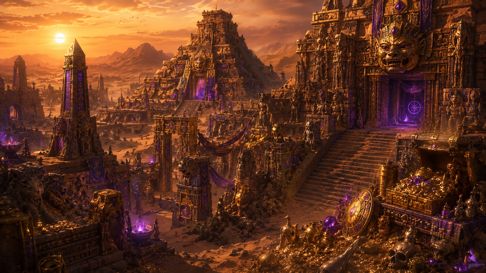
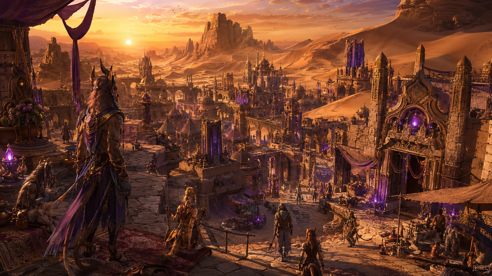
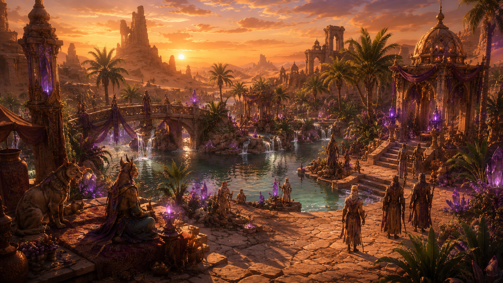
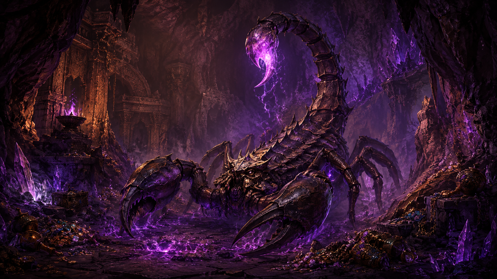
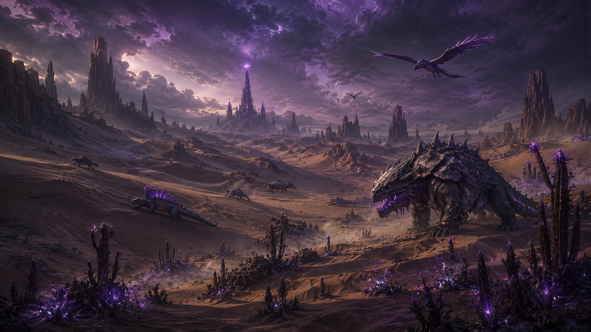
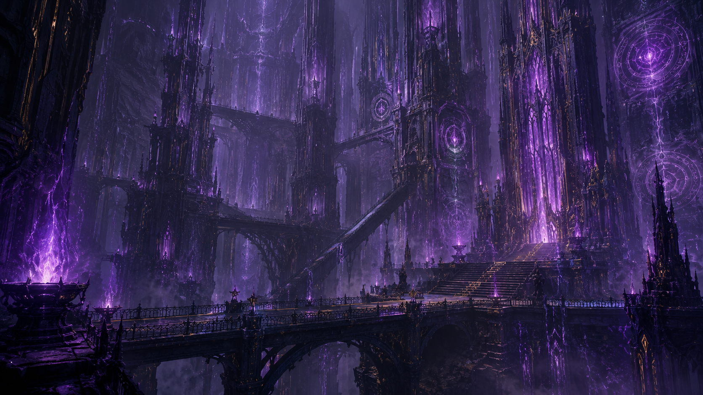

A vast desert of forgotten ruins, arcane machinery and buried empires, where ancient towers rise above endless dunes and violet energy still pulses beneath the sand.
Discover ArkhanThe Arkhan Wastes stretch across an immense desert filled with the remains of civilizations that disappeared
long before the current inhabitants arrived. Beneath the dunes lie buried structures, forgotten machines and ruins
still powered by strange violet energy.
Arkhara developed around one of the largest surviving ancient structures: an enormous tower that rises above
the desert and can be seen from miles away. Settlements, excavation camps and markets have slowly appeared around
important ruins, creating a nation built almost literally on top of its own forgotten past.
The Council of Relics governs the region and controls the study of the technology recovered from beneath the
sand. Desert Tribes, Semi-Humans and Arcane Scholars live alongside one another, combining traditional survival
knowledge with rune magic and ancient machinery. The Sand Wardens protect travelers, ruins and discoveries
considered too dangerous to be left unguarded.
Despite the extreme heat, the desert supports its own ecosystem. Crystal-like cacti, thorny shrubs and oasis
vegetation survive where water can be found, while reptiles, desert beasts and enormous scorpions travel beneath
the sand. Some creatures have been altered by the same arcane energy that still flows through the ruins.

Arkhara
The Council of Relics
Desert Tribes, Semi-Humans and Arcane Scholars
Rune and Arcane Technology
Dry, Harsh and Extremely Hot
The Sand Wardens








